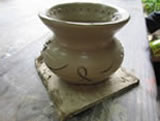
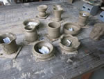
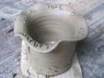
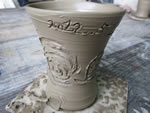
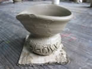

鶯歌一日遊學2012醒吾班學員心得 |
||||
身為台北人的我，第一次去到了鶯歌真的讓我大開眼界耶~~一整天下來參觀了好幾間工廠，這可是一般觀眾看不到的唷!很謝謝那天帶我們導覽的志工以及時尚系的社團，讓我對陶藝品又更深得了解唷!才讓我恍然大悟原來生活中杯杯盤盤是經過繁複的流程才有的唷!也親自體驗了手拉坏，這是我第一次玩手拉坏，雖然沒有做得很好，哈哈!!很佩服那些為陶藝品付出認真的工作者，製作陶瓷雖然需要在溫度很高的環境中，但看到成品出來想必一定很有成就感吧!!好期待我們的成品，鶯歌一日遊很充實，也讓我想再一次去觀光唷!一天下來讓我領悟了創意的價值無限。
|
||||
這一趟遊學，我真的充滿著興趣，且開心，我都不知道原來一個陶藝品是多麼的繁複，需要那麼多工才能造就出一個好的陶藝品，原來我們所以的陶碗，上面的圖案，都需要經過長期的烤焙才能完成。曾經我想過為何每個陶碗都能這麼漂亮，湯匙是怎麼捏出來如此光滑，經由這趟遊學我才懂，原來還有母模、子模這東西，我還想說為何我之前拉手拉坯好難唷!怎麼會有這麼厲害的人能夠拉出一模一樣的，今天拉手拉坯是我的二次拉手拉坯，第一次去玩時我拉了一個小碗，在裡面畫的圖案，拿到時我才發現，如果拿那個碗吃飯…之類的會很難洗耶!!因為裡面坑坑洞洞的，所以我這次學聰明，都把圖案畫在外面，這一趟好開心!!我也希望能夠將社團成立起來，希望在下學期就能看到。謝謝你們~
|
||||
| 學員作品 | ||||
|  |  |  |  | |
|  | ||||